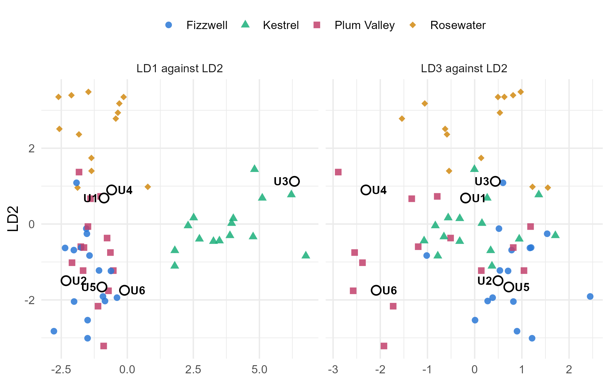

Module 3 · Lesson 13 of 13 Week 59 of 160 About 5–7 hours
Linear discriminant analysis
Six drums without labels: which supplier sent them?
Build a rule that classifies new cases into known groups: find Fisher’s linear discriminants as the eigenvectors of MANOVA’s E⁻¹H, classify with posterior probabilities and see that LDA is a Mahalanobis distance rule, estimate error rates honestly with cross-validation, change the prior probabilities, and compare quadratic discriminant analysis.
A forklift accident in the warehouse knocked over a pallet, and six drums of feed lost their labels. Nobody knows which supplier sent which drum. The lab sampled each one and measured the same four properties as the incoming lots of Lessons 5 to 7:
drums
#> # A tibble: 6 × 5
#> drum_id water_ppm aldehyde_ppm acid_mgKOH iron_ppb
#> <chr> <dbl> <dbl> <dbl> <dbl>
#> 1 U1 206 56.1 0.1 38
#> 2 U2 174 43.2 0.091 32.4
#> 3 U3 348 54.7 0.157 36.8
#> 4 U4 205 56.4 0.086 56
#> 5 U5 197 40.4 0.082 34.6
#> 6 U6 215 41.4 0.134 48.1The 58 labeled lots of Lessons 5 to 7 show what each supplier’s feed looks like. Discriminant analysis turns them into a rule that assigns a new case to one of several known groups. It’s a classification method, like the logistic regression of Lesson 2.15 but for several groups at once, and Module 7 builds many more.
Detective time! Four suspects, four clues, and six drums that aren’t talking.
In this lesson you’ll:
- find Fisher’s linear discriminants, the combinations that best separate the groups
- classify new cases, with posterior probabilities
- see that LDA is a Mahalanobis distance rule
- estimate how often the rule is wrong, honestly, with cross-validation
- change the prior probabilities, and try quadratic discriminant analysis
Fisher’s linear discriminants
In 1936, R. A. Fisher asked: which linear combination \mathbf{a}^\top\mathbf{x} of the variables separates the groups best? “Best” means the largest ratio of the between-group variation to the within-group variation of the combination:
\frac{\mathbf{a}^\top H \mathbf{a}}{\mathbf{a}^\top E \mathbf{a}},
with H and E the between-group and within-group SSCP matrices of one-way MANOVA (Lesson 6). The answer is the eigenvector of E^{-1}H with the largest eigenvalue: the first linear discriminant. The next eigenvectors give the second and third discriminants, each the best separator among the combinations uncorrelated with the earlier ones. With k groups and p variables, there are \min(p, k - 1) of them, here 3.
So the eigenvalues that Lesson 6 turned into Wilks’ lambda, 5.50, 2.14 and 0.46, also measure how well each discriminant separates the suppliers. The first carries 5.50/(5.50 + 2.14 + 0.46) = 68\% of the separation.
Your turn. The setup code has loaded the 58 lots as feed and the six drums as drums. Fit the linear discriminant analysis with MASS::lda().
The groups go on the left of the formula: supplier.
fit <- MASS::lda(supplier ~ water_ppm + aldehyde_ppm + acid_mgKOH + iron_ppb, data = feed)
fitThe printout shows the prior probabilities (the suppliers’ shares of the 58 lots), the group means, the coefficients of the three discriminants, and the “proportion of trace”: 68%, 26% and 6% of the separation. The coefficients depend on the units, so they’re hard to read directly. The next exercise interprets the discriminants a better way.
Your turn. predict(fit)$x holds each lot’s scores on the three discriminants. As with canonical variates in Lesson 12, correlate them with the original variables to see what each discriminant measures.
The scores are in the x component: predict(fit)$x.
scores <- predict(fit)$x
round(cor(X, scores), 2)Each discriminant is essentially one property. LD1 is the water (0.99), with the acid along for the ride (0.77): it separates Kestrel. LD2 is the aldehyde (0.99): it separates Rosewater. LD3 is the iron (−0.94): it separates Plum Valley from Fizzwell. These are the fingerprints of Lessons 6 and 7, found automatically.
Here are the 58 lots and the six drums on the discriminants. The left panel shows LD1 against LD2, and the right panel LD3 against LD2:
fit <- MASS::lda(supplier ~ water_ppm + aldehyde_ppm + acid_mgKOH + iron_ppb, data = feed)
lot_scores <- as.data.frame(predict(fit)$x) |> mutate(supplier = feed$supplier)
drum_scores <- as.data.frame(predict(fit, newdata = drums)$x) |> mutate(drum = drums$drum_id)
long_scores <- function(d) {
bind_rows(mutate(d, panel = "LD1 against LD2", horizontal = LD1),
mutate(d, panel = "LD3 against LD2", horizontal = LD3))
}
drum_points <- long_scores(drum_scores) |>
mutate(hjust = c(1.4, -0.4, 1.4, -0.4, 1.4, -0.4, # label sides in the left panel, U1 to U6,
-0.4, 1.4, 1.4, -0.4, -0.4, -0.4)) # and the right panel, so no labels overlap
ggplot(long_scores(lot_scores), aes(x = horizontal, y = LD2)) +
geom_point(aes(color = supplier, shape = supplier), size = 2.2, alpha = 0.85) +
geom_point(data = drum_points, shape = 21, fill = "white", color = "black", size = 3, stroke = 0.9) +
geom_text(data = drum_points, aes(label = drum, hjust = hjust), size = 3.4, fontface = "bold") +
scale_color_manual(values = c(Fizzwell = "#2a78d6", Kestrel = "#1baf7a", `Plum Valley` = "#C2416C", Rosewater = "#d18a12"), name = NULL) +
scale_shape_manual(values = c(Fizzwell = 16, Kestrel = 17, `Plum Valley` = 15, Rosewater = 18), name = NULL) +
facet_wrap(~ panel, scales = "free_x") +
labs(x = NULL, y = "LD2") +
theme_minimal(base_size = 12) +
theme(legend.position = "top")
Kestrel is unmistakable, and so is drum U3. Rosewater sits at the top. Fizzwell and Plum Valley overlap in the left panel and only come apart on LD3, the weakest discriminant, so they’ll be the hardest to tell apart. Drum U1 sits between three suppliers.
Classifying the drums
Classification needs a rule. Suppose each supplier’s lots are multivariate normal with a common covariance matrix \Sigma (MANOVA’s assumption). Then the probability that a new case \mathbf{x} came from group j is its posterior probability, by Bayes’ theorem:
P(\text{group } j \mid \mathbf{x}) = \frac{\pi_j f_j(\mathbf{x})}{\sum_i \pi_i f_i(\mathbf{x})},
where f_j is group j’s normal density and \pi_j its prior probability, how common the group is before you look at \mathbf{x}. The rule assigns \mathbf{x} to the group with the largest posterior probability. Because the groups share \Sigma, the boundaries between the groups are straight lines (planes, in four dimensions): that’s why it’s called linear. By default, lda() uses the groups’ shares of the training data as the priors.
Your turn. Classify the six drums, and look at the posterior probabilities.
Predict for the drums data frame.
pred <- predict(fit, newdata = drums)
data.frame(drum = drums$drum_id, supplier = pred$class, round(pred$posterior, 3))Five clear verdicts: U2 and U5 are Fizzwell’s (posteriors 0.86 and 0.88), U3 is Kestrel’s (1.00), and U4 and U6 are Plum Valley’s (0.90 and 0.96). U1 is assigned to Plum Valley, but with a posterior of only 0.49, against 0.34 for Rosewater and 0.17 for Fizzwell. The rule is guessing. The honest report says so: “U1 is probably Plum Valley’s or Rosewater’s: test it further before using it.”
LDA is a distance rule
There’s a simpler way to see the rule. Take logs of \pi_j f_j(\mathbf{x}), drop what’s the same for every group, and you’re left with
-\tfrac12 D_j^2(\mathbf{x}) + \ln \pi_j, \qquad D_j^2(\mathbf{x}) = (\mathbf{x} - \bar{\mathbf{x}}_j)^\top S_p^{-1} (\mathbf{x} - \bar{\mathbf{x}}_j),
where D_j^2 is the squared Mahalanobis distance of Lesson 2 from \mathbf{x} to group j’s mean, measured with the pooled covariance matrix S_p. So with equal priors, LDA assigns each case to the nearest group mean, in Mahalanobis distance. Unequal priors just give the more common groups a small head start.
Your turn. The setup code has stored the suppliers’ mean vectors as the rows of means, and the pooled covariance matrix as Sp. Compute each drum’s squared distance to each supplier.
Measure the distances with the pooled covariance matrix, Sp.
D2 <- sapply(levs, function(s) mahalanobis(as.matrix(drums[, vars]), means[s, ], Sp))
rownames(D2) <- drums$drum_id
round(D2, 1)Each drum’s smallest distance picks the same supplier as lda() did. For U1, the distances to Plum Valley (3.2), Rosewater (3.9) and Fizzwell (5.6) are all small: U1 would be an ordinary lot from any of the three. That’s why its posterior probabilities are so evenly split. U3, at a distance of 8.4 from Kestrel, is a slightly unusual Kestrel lot, but it’s 59 or more from everyone else.
How often is the rule wrong?
Before trusting the rule, estimate its error rate. The obvious way is to classify the 58 training lots and count the mistakes. That’s the apparent error rate, and it’s optimistic: the rule was fitted to those very lots, so it does better on them than it will on new ones.
The honest way is cross-validation, as in Lesson 2.12: classify each lot with a rule fitted to the other 57. With CV = TRUE, lda() does exactly that (leave-one-out cross-validation), and returns each lot’s cross-validated class.
Your turn. Compute the apparent error rate and the confusion table, which crosses the true suppliers with the predicted ones.
Compare the predictions with the true suppliers, feed$supplier.
predicted <- predict(fit)$class
print(table(true = feed$supplier, predicted = predicted))
mean(predicted != feed$supplier)6 of the 58 lots are misclassified, an apparent error rate of 10%. Every Kestrel and Rosewater lot is right. The mistakes are mostly between the twins: four Plum Valley lots called Fizzwell’s, and one the other way round. The sixth is a Fizzwell lot called Rosewater’s.
Your turn. Now the honest estimate: the leave-one-out cross-validated error rate.
Set CV = TRUE.
cv <- MASS::lda(supplier ~ water_ppm + aldehyde_ppm + acid_mgKOH + iron_ppb, data = feed, CV = TRUE)
mean(cv$class != feed$supplier)8 of the 58 lots are misclassified, 14%. On new drums, expect the rule to be wrong about one time in seven, mostly when a drum comes from Fizzwell or Plum Valley. The apparent rate, 10%, was a little optimistic, as expected.
Quadratic discriminant analysis
LDA assumes that the groups share a covariance matrix. Lesson 6’s Box’s M test said they don’t: Kestrel’s water varies about twice as much as anyone else’s. Quadratic discriminant analysis (QDA) drops the assumption. Each group keeps its own covariance matrix S_j, so the distance to group j is measured with S_j, and the rule adds a term for the size of S_j:
-\tfrac12 \ln\det S_j - \tfrac12 (\mathbf{x} - \bar{\mathbf{x}}_j)^\top S_j^{-1} (\mathbf{x} - \bar{\mathbf{x}}_j) + \ln \pi_j .
The boundaries between the groups become curved (quadratic). That’s more flexible, but it costs something. QDA estimates four separate covariance matrices, 40 parameters in all, from 13 to 16 lots per supplier, against 10 parameters for LDA’s single pooled matrix. With small groups, that extra noise can outweigh the better fit.
Challenge round
Challenge 1 · QDA. Compute QDA’s cross-validated error rate, and compare it with LDA’s 14%.
The function is MASS::qda().
qcv <- MASS::qda(supplier ~ water_ppm + aldehyde_ppm + acid_mgKOH + iron_ppb, data = feed, CV = TRUE)
mean(qcv$class != feed$supplier)21%: 12 of the 58 lots, worse than LDA’s 8. Its apparent error rate is better than LDA’s (9% against 10%), but that’s the extra flexibility fitting noise. With these small groups, the simpler rule generalizes better, even though its assumption is a little wrong. QDA would earn its keep with larger groups, or with covariance matrices that differ much more.
Challenge 2 · Better priors. The warehouse manager remembers that the pallet was half Rosewater’s drums, with the rest from the other three suppliers. Use priors of 1/2 for Rosewater and 1/6 for each of the others (in the order Fizzwell, Kestrel, Plum Valley, Rosewater), and classify the drums again.
Rosewater’s prior is 1/2.
pred2 <- predict(fit, newdata = drums, prior = c(1/6, 1/6, 1/6, 1/2))
data.frame(drum = drums$drum_id, supplier = pred2$class, round(pred2$posterior, 3))U1 switches to Rosewater, with a posterior of 0.63. The other five verdicts don’t change, though U4’s posterior for Rosewater rises to 0.26. The data hardly distinguished Rosewater from Plum Valley for U1, so the prior information tipped the balance. For the clear-cut drums, the data overwhelm any reasonable prior.
Postscript. The delivery notes turned up a week later. U2 and U5 were Fizzwell’s, U3 Kestrel’s, U4 and U6 Plum Valley’s, and U1 was Rosewater’s. The LDA rule with the default priors got five of the six drums right, and the one it got wrong was exactly the one whose posterior probabilities said “not sure”.
Quick quiz
1. How many linear discriminants are there with 4 groups and 4 variables?
There are \min(p, k - 1) = \min(4, 3) = 3.
2. Where do Fisher’s discriminants come from?
Each discriminant maximizes the ratio of between-group to within-group variation, \mathbf{a}^\top H\mathbf{a}/\mathbf{a}^\top E\mathbf{a}.
3. With equal priors, which group does LDA assign a case to?
That’s why LDA works with the variables’ correlations and units, like Lesson 2’s distances.
4. Why is the apparent error rate optimistic?
Cross-validation tests each case with a rule fitted without it.
5. QDA has a better apparent error rate but a worse cross-validated error rate than LDA. What does that suggest?
More parameters fit the training data better, but can predict new data worse.
6. A drum’s posterior probabilities are 0.49, 0.34 and 0.17 for three suppliers. What should you report?
Posterior probabilities tell you how sure the rule is, not just what it guesses.
Wrap-up
You can now classify new cases into known groups! Here’s what you’ve learned:
- Fisher’s linear discriminants are the eigenvectors of E^{-1}H: the combinations that best separate the groups. Here, each one is essentially one property: water, aldehyde, iron.
- The classification rule assigns a case to the group with the largest posterior probability. With a common covariance matrix, that’s the nearest group mean in Mahalanobis distance, adjusted for the priors.
- Posterior probabilities say how sure the rule is. U1’s split posteriors flagged the one drum the rule got wrong.
- Error rates: the apparent rate (10%) is optimistic, and leave-one-out cross-validation (14%) is honest.
- Priors matter when the data can’t decide. Half-Rosewater priors switched U1 to Rosewater.
- QDA gives each group its own covariance matrix. With small groups, it can do worse than LDA, as here (21%).
TipPractice in RStudio (optional, about an hour)
Download feed_lots.csv and unlabeled_drums.csv into your project’s data-raw/ folder.
- Fewer variables. Refit the LDA with only the water and the aldehyde. What happens to the cross-validated error rate, and which suppliers get confused? Which property would you add first?
- Plot the boundaries. With two variables, LDA’s boundaries are straight lines. Make a fine grid of water and aldehyde values with
expand.grid(), classify each grid point, and draw the regions withgeom_tile(). Try the same with QDA, and see the curves. - Costs. Sending a Kestrel drum into production unnoticed is expensive, because its water ruins a batch. How would you change the rule to make that mistake rarer? (Hint: what do the priors do?)
- A canonical view.
candisc::candisc(lm(cbind(water_ppm, aldehyde_ppm, acid_mgKOH, iron_ppb) ~ supplier, data = feed))gives canonical discriminant analysis, which is the same as LDA’s discriminants with MANOVA’s tests attached. Compare its canonical correlations with the square roots of \lambda/(1 + \lambda) for Lesson 6’s eigenvalues.
NoteKey words from this lesson
- Discriminant analysis
- A method that builds a rule to assign new cases to one of several known groups.
- Linear discriminant
- A linear combination of the variables that best separates the groups, an eigenvector of E^{-1}H.
- Prior probability
- A group’s probability before the case’s measurements are seen, such as its share of all cases.
- Posterior probability
- A group’s probability after the measurements are seen, by Bayes’ theorem.
- Apparent error rate
- The share of the training cases that the rule misclassifies. It’s optimistic.
- Cross-validated error rate
- The share of cases misclassified by rules fitted without them, an honest estimate of the error on new cases.
- Quadratic discriminant analysis
- Discriminant analysis with a separate covariance matrix for each group, giving curved boundaries.
NoteWant to read more?
- Penn State STAT 505, Lesson 10: Discriminant Analysis. Linear and quadratic discriminant analysis, error rates and an example, with sections 10.3 to 10.5 on this lesson’s topics.
- Gareth James and others, An Introduction to Statistical Learning, chapter 4, “Classification”. LDA and QDA alongside logistic regression, with R labs. A preview of Module 7.
- Johnson and Wichern, Applied Multivariate Statistical Analysis, chapter 11, “Discrimination and classification”. The rules, the costs and priors, and Fisher’s method, in depth.